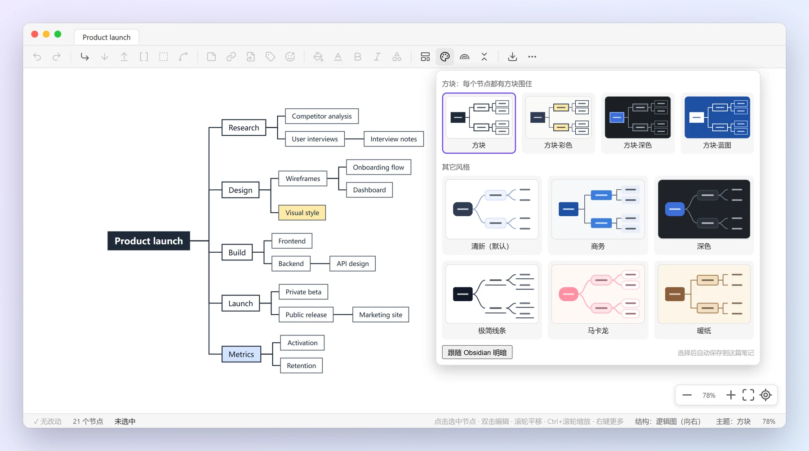
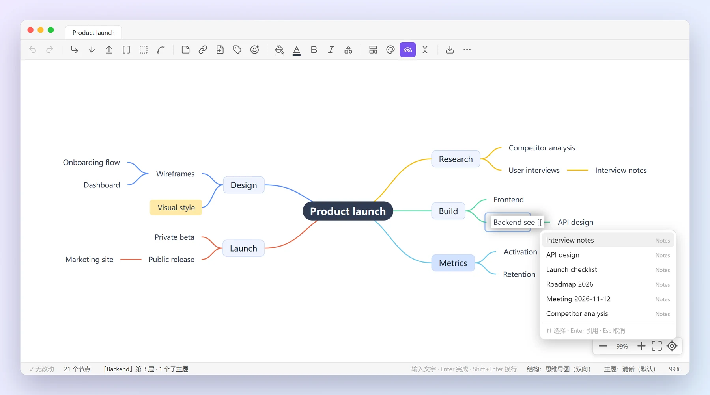

Obsidian 插件
CloudMind
CloudMind 是一个 Obsidian 插件。它把 Markdown 的标题和列表显示为可编辑的思维导图。
导图和笔记共用一个 .md 文件。标题与列表保存层级，注释保存节点外观；画布编辑通过同一个转换器写回，因此笔记仍保留可读的 Markdown 结构。
一份 Markdown 的双向转换
读入
- 标题与列表从文件解析层级
- 节点树文本、备注与子节点
- 导图视图布局与主题
写回
- 画布编辑节点内容与结构
- 序列化层级写回正文
- 同一文件注释保留节点元数据
 放大查看 ↗
放大查看 ↗Obsidian 演示库中的标题和嵌套列表映射为导图父子节点。
Markdown 与节点树的往返
标题、缩进与节点树
parseDoc 读取标题级别和列表缩进，构造带 children 的节点树。普通文本行归为节点备注，行尾元数据补回样式。预览直接使用解析结果，画布编辑才触发写回。
序列化保留可读正文
serializeDoc 将节点层级重新写成标题和列表，并把备注写回节点下方。若备注恰好以标题或列表符号开头，写回时转义，读回时还原，避免下一次解析把一条备注误认成新分支。
呈现样式与 Obsidian 双链
文档级布局与节点级样式
结构和主题写入笔记的 frontmatter，颜色、折叠或图标等节点元数据写入对应行的隐藏注释。八种结构和十套主题复用同一棵节点树；PNG、SVG 和 XMind 是导出产物。

放大查看 ↗引用继续使用标准双链
节点引用沿用 Obsidian 的双链语法，库内补全、反向链接和关系图谱可以识别同一目标。这样一个节点能指向完整笔记，导图仍保持简洁。

放大查看 ↗